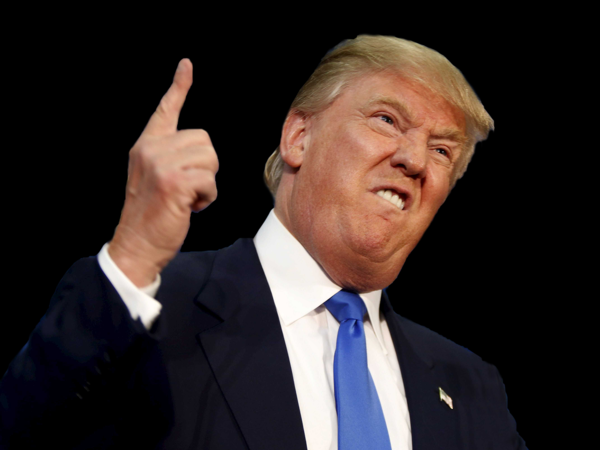

One thing that COVID-19 did to us was keep us in. Through stay-at-home orders, we were kept inside, by the fridge but not by the sidewalks. As a result, I gained some weight (I'm sadly not the only one that admits this) when access to the gym was closed and the outsides were not even readily available for usage. On top of this, during the George Floyd riots, a curfew was established, which further limited our ability to leave home and get much needed exercise. Even today, with curfews lifted and lockdowns slightly easened, we are facing a new challenge that prevents us from getting outside - the cold, which, as an addon, made me eat more food.

Another thing that COVID-19 changed my view on is Donald Trump. Even before the pandemic, I wasn't a fan of Donald Trump, who was known for his extremely inappropiate remarks before and during his term as president. During the pandemic, his lackluster response and his refusal to wear a mask helped solidify my opposition of him, and towards the end of his presidency, his role in sparking the Capitol Riots helped convince me of his almost-psychotic decisions and mindset. Even though Joe Biden isn't the best person to take office, anyone is better than Donald Trump, who stages riots and displaces democracy to his own advantage..
These days, my schoolwork is affected by COVID-19 both physically and in terms of output. First of all, these days, most of homework is done on Google Docs / Microsoft Word and submitted through Google Classroom / Turnitin instead of being submitted physically, which takes away the requirements that something must be handwritten or printed. This, along with the 5-period schedule, gives me more time to do what I want, due to generally shorter homework times. Also, because of the pandemic and certain events that are happening today has a key impact on what we do as schoolwork. We obviously wouldn't be doing this project if we weren't in the midst of a pandemic!
And finally, the fear of COVID-19 itself overpowers us and any of our other feelings. The feeling of being kept inside, bouncing around in an area all known too well, but fearful for the risk of getting sick, or worse, losing a family member. These are all feelings I've had and fought back. My family members in another country getting tested positive, my uncle going to the hospital and having to get put up to a ventilator, and even the thought that I could have COVID-19 have changed my mindset towards life in 2020-2021. But most of all, everyone dreams about WHEN this will end, and I do too.
Sections
Home
Here, I talk about what changed for me in emotional matters.
Here, I talk about what changed for me in intellectual matters.
Here, I talk about what changed for me in my life directly due to COVID-19.